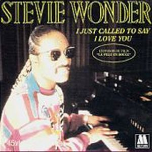

La Mujer de Rojo es una selección de la banda sonora de la comedia de Gene Wilder con el mismo nombre, The Woman In Red, y que con la canción I just call to say i love you (Sólo llamé para decirte que te quiero), consigue el Oscar a la mejor canción original, gana un Globo de Oro, y tres nominaciones a los Premios Grammy como "Mejor Interpretación Vocal Pop Masculina", "Canción del Año" y "Mejor Interpretación Pop Instrumental" . Es sin duda la balada del año, algunos se atreven a decir incluso la balada del siglo, pero lo que si es seguro es que abre las puertas a un mercado español poco abierto al R&B y a la música negra en general. Este single se mantiene en el número 1 de las listas de medio mundo durante mucho tiempo.
El resto del disco, son canciones muchas de ellas con la colaboración de la cantante Dionne Warwick y un estilo más comercial dentro del Pop. Aquí en España las ventas van viento en popa ayudado por la canción "Don't drive drunk", que sirve de base para la campaña de la Dirección General de Tráfico "si bebes no conduzcas" e incrementar la seguridad en las carreteras. Es una etapa buena en lo comercial, y en espera de lo que será un auténtico disco Stevie Wonder, ya que este disco, se trata de una serie de canciones que Stevie aporta a la banda sonora de la Mujer de Rojo, teniendo a medio acabar "In Square Circle" su futuro disco.

